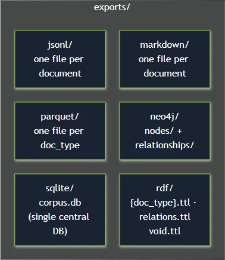
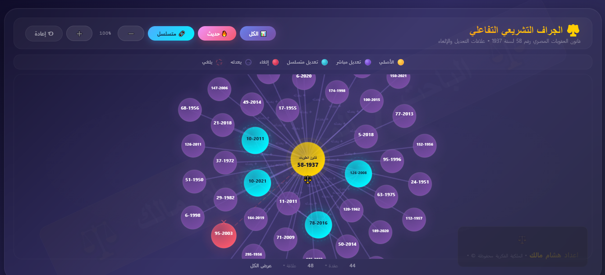

AI-ready legal data + ontology + knowledge graph
LLMs read Egyptian law as text. But law is not text — it is relations, rulings that constrain it, jurisprudence that deepens it, constitutional principles it derives from, and institutions built upon it. ELKM is the understanding layer that holds all of that together.
Raw text is not knowledge
Sound familiar? An AI answer cites an article, and nobody can see what the article says. A judgment is quoted from memory, with no court, date or link. Nobody knows which version of the law the answer was based on.
ELKM fixes this. A PDF of a statute is data. Knowing that Article 5 amends Article 2, and that Article 2 was repealed — that's knowledge. ELKM builds the layer that makes the AI cite the real Egyptian text, not a hallucination.
A professional relations schema
Three typed relation families — document↔document, document↔entity, document↔position — expressed as a structured enum. Open, versioned, non-final: the schema evolves with the law itself.
Built for AI agents
Structured, queryable, versioned. Designed so an LLM agent can traverse legal reasoning — not just retrieve a paragraph by keyword. As Neo4j's Emil Eifrem puts it: thinner agents on a smarter substrate. The ontology is the substrate; the agent stays thin.
Watch: Thinner Agents on a Smarter Substrate (Neo4j)
Document to Document
Horizontal relations between legal texts.
- ↳ total_repeal
- ↳ partial_repeal
- ↳ amendment
- ↳ addition
- ↳ renumbering
- ↳ unconstitutionality_ruling
- ↳ reinstatement
- ↳ referral
- ↳ acceptance_procedural
- ↳ acceptance_substantive
- ↳ rejection_procedural
- ↳ rejection_substantive
- ↳ preemptive_repeal
Document to Entity
Establishing, abolishing, or modifying entities.
- ↳ establishes
- ↳ abolishes
- ↳ merges
- ↳ splits
- ↳ renames
Document to Position
Delegating powers, creating roles, and defining duties.
- ↳ delegation
- ↳ prohibits
- ↳ obligates
- ↳ empowers
- ↳ creates_position
- ↳ abolishes_position
- ↳ expands_powers
- ↳ restricts_powers
The money is moving. The Egyptian layer is missing.
Global legal AI is attracting billions. None of it is building the structured knowledge layer for Egyptian law.
| Company / Market | Raised / Size | Note |
|---|---|---|
| Harvey | $818M | Legal AI platform (US/UK) |
| Clio | $850M + $1B vLex | Legal practice management + vLex acquisition |
| Legal tech 2025 | $5.99B +22% | Global market, year-over-year growth |
Global legal AI models. The Egyptian layer is either ignored or superficial.
Global models like Ansvar and Dike either treat Egyptian law as plain text or build a superficial layer on top. They lack the depth, the article-level precision, and the institutional understanding required for a true legal knowledge graph.
Ansvar — Text Search MCP
Ansvar is an MCP server that applies a text search engine across many different jurisdictions. However, it treats Egyptian law merely as text, lacking the deep legal complexity, specific structural layers, and the nuanced relationships required to model Egyptian legal semantics.
Dike — Flat Document States
Dike's published dataset on Hugging Face (eg-legal-citation-graph) relies on flat document states, treating entire laws as single entities (canonical_id). Its citation graph lacks semantic meaning, fails to build precise article-level relations, and completely ignores institutional and functional relations.
View Dike Dataset
What we offer that they have not
The only Egyptian ontology
A formal ontology for Egyptian law — with its historical depth and legislative diversity — does not exist anywhere else. ELKM is the first to structure it.
Sector and legal-field classifications
Documents are classified by subject matter and legal field — not just tagged with keywords. Classification is part of the model, not a layer added later.
Document types and definitions schema
A typed schema for each kind of legal document — law, decree, judgment, principle, fatwa, regulation — with its own definition rules and hierarchy levels.
Identifier system
Every document, article, entity, position and court principle carries a stable, resolvable identifier (e.g., LAW-12-2025, ENT-CC). Edges never break and citations never drift.
Multi-format export
The graph can be exported as JSON, RDF-style triples, CSV adjacency lists, or the native ELKM schema — so it plugs into any downstream AI or analytics pipeline.
Diverse, precise relations — at the article level
Relations are not at the document level. They are at the article level, and typed precisely. Every edge carries source, date and confidence metadata.
Document, institutional and functional relations
Three relation families in one model — DOC↔DOC, DOC↔ENT, and DOC↔POS. Most existing efforts stop at the first.
Egypt cleaned the corpus. It didn't structure it.
Egyptian law is scattered across state-run portals. The Supreme Committee for Legislative Reform produced an inventory and a cleanup of active laws (17,049 → 618): a digital archive, not a knowledge layer. No classifications, no relations, no structure.
Egyptian Legal Portal
290K laws + 100K judgments. Huge, searchable, but flat text — no relations, no status graph.
Court of Cassation
650K principles. The reasoning goldmine — locked in PDFs and inconsistent citations.
Official Gazette
The only authoritative source of enactment dates. Manually read, manually cited, not machine-linked.
Manshurat
A free digital archive concerned with legal texts in Egypt. A private project by the Law and Society Research Unit, at the School of Global Affairs and Public Policy, The American University in Cairo.
Supreme Committee
The latest state effort to refine laws and inventory existing legislation. It is a closed database with no ontology, relations, or time-tracking.
Legislative Reform Committee ↗
Supreme Constitutional Court
Rulings on constitutionality that silently invalidate articles — invisible to keyword search.
Legislative Reform Committee
moj.gov.eg:73
Supreme Constitutional Court
sccourt.gov.eg
Ministry of Justice
moj.gov.eg
AUC Manshurat
manshurat.org
Official Gazette
alamiria.com
Even our conversation right now is governed by a decision, based on a regulation, derived from a law. If every ministry builds its own AI agent with isolated legal data and no awareness of the overarching legal structure, the Ministry of Investment's AI will contradict the Ministry of Communications' AI. ELKM prevents this fragmentation by building a unified, open knowledge layer..
How ELKM structures the corpus
From raw scraped text to a normalized, queryable, versioned knowledge graph.
Multi-format Exports
ELKM allows you to export the structured legal data into multiple formats suitable for any AI pipeline.

Deep Legal Graph Sample
A visualization showing the complex, nested relationships between laws, articles, entities, and positions.

Why ELKM fits TIEC's Start IT program
The Start IT program at the Technology Innovation and Entrepreneurship Center funds applied ICT and AI projects that solve real Egyptian problems. ELKM is exactly that.
Applied AI with a clear public benefit
ELKM turns Egyptian legal text into a structured, machine-readable knowledge graph — improving access to law, reducing legal AI hallucination, and enabling a whole class of downstream tools.
Arabic-first knowledge infrastructure
There is no Arabic legal ontology in production. ELKM is the first — and it is Egyptian. This is a direct contribution to the Arabic digital content and AI ecosystem.
Open source, exportable, non-proprietary
Everything — the ontology, the schema, the graph — is public on GitHub. The output can be used by any Egyptian startup, ministry, university or AI project.
A prototype that can be demonstrated today
ELKM is not a proposal on paper. The schema, the relation types, the JSON export and a working graph sample already exist.
A flagship Egyptian AI story
An Egyptian lawyer building the country's first legal knowledge graph — with Egyptian law, Egyptian data, and an open license — is a story that positions Egypt in the global AI landscape.
Shared benefit: Egypt gains, TIEC gains
Egypt gains a national legal knowledge infrastructure. TIEC gains a working AI+legal flagship project with real social impact and a measurable output.
Read the Start IT program page for the full list of goals and selection criteria.
Visit Start IT ↗Build the Egyptian legal knowledge layer with us
ELKM is open. The ontology, the graph, and the schema are public on GitHub. We invite all stakeholders — official bodies, academic institutions, researchers, legal experts, and volunteers — to contribute to this corpus. If you believe Egypt deserves its own unified understanding layer, start there.
Watch: Why Data Matters